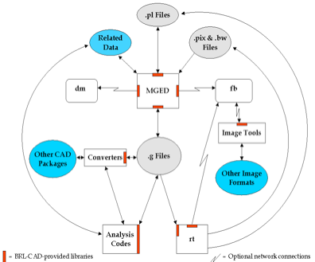

European Summer of Code 2016
Mentor: Christopher Sean Morrison
Student: Asad
This document lists down the design for the project. This includes the major milestones and deadlines. Prettier Version
Outline
The idea is to build a geometry viewer application that generates a standalone double-clickable file that views a given model. The approach is to concatenate the contents of a given “.g” file with the function calls from librt and display a “.g” file, in a standard brlcad setup.
Our source code will generate an executable, we will then separately concatenate a ".g" file into this executable:
This executable is capable of:
- Finding the start of ".g" file bytes/headers
- Populating the g file database for librt
- Plotting the items in the g file using glfw3.
Our motivation is to introduce portability and ability to share results of brlcad via email with users who don’t have brlcad setup in their environments. First we will develop a standalone application but later this can be integrated into mged or any other tool as a brlcad feature.
Status (15.08.2016)
Our source code takes an embedded .g file and locates it's header bytes from there on it calls db_open() by writing the gbytes into a temporary file and populates struct db_i. The source also calls db_ls to get a count of objects in the database and calls db_walk_tree on one of the objects. Then work a list of all top level objects is fetched via db_ls and then db_walk_tree is called on each of them. The next step is to plot these zones, for this purpose we have decided to choose glfw3. Currently the work is being done to generate a simple window from our application using glfw.
Task Breakdown
The brlcad suite has many tools and libraries that interact with each other to render and view models. The general architecture is given below: 
The most important part for us out of this architecture is the geometry rendering libraries, to be more specific librt & libdm.
• Librt, the library that contains all of the geometry support. It parses the “.g” file and its function calls can be used to extract contents of “g” file. We will use this to parse our model file for Libdm. The relevant function call is “db_open”. There is also possibility to use a higher level library “libged” (ged_open)
• Libdm is BRL-CAD's primary graphics display manager (dm) library. It is used to display geometry in GUI. This will be utilized by our source to visualize model files.
This resulting draw result will then be bundled into an executable (Linux) and later into packages for Mac & Windows.
Task list
1. Evaluate technology to be used
Develop initial project design draft[DONE]Setup development environment[DONE]
-
- Installing BRLCAD: (Install Instructions)
System Specs: CentOS 7, Dual Core, 4G RAM, 40 G Storage
# Fetch the STABLE version of BRLCAD (7.24.4):
svn checkout http://svn.code.sf.net/p/brlcad/code/brlcad/branches/STABLE/ brlcad-stable
cd brlcad-stable
mkdir brlcad-build
cd brlcad-build
cmake ../ -DBRLCAD_BUNDLED_LIBS=ON -DCMAKE_BUILD_TYPE=Release -BRLCAD_ENABLE_STRICT=OFF
# Without enable strict we get an error: "array subscript is above array bounds" during make
make -j6
make install
vim ~/.bash_profile
# Add "/usr/brlcad/rel-7.24.4/bin" to PATH.
vim brlcad-7.24.4.conf
# Add "/usr/brlcad/rel-7.24.4/lib"
ldconfig
- Evaluate programming language choice (C decided, for GUI may use some Python)
2. Evaluate and look into current viewer applications:
- Mged / archer
- Isst, it doesn’t use libdm.
- Geometry viewer 1
3. Create Compiler Application:
First step is to merge .g file into executable and then read it's contents. This is achieved by simply concatenating .g file with executable using the Linux "cat" command e.g., cat viewer moss.g > exec.
Then we locate the header bytes (hex) of the embedded .g file from within the executable. From "hexdump" command we can conclude that .g files have the bytes (76 01 00 00 00 00 01 35) in common:
hexdump -C build/share/db/wave.g | head
00000000 76 01 00 00 00 00 01 35 76 02 00 00 00 00 0a 00 |v......5v.......|
00000010 00 00 00 00 00 00 00 00 00 00 00 00 00 00 00 00 |................|
*
00000050 00 00 00 00 00 00 00 35 76 02 00 00 00 00 02 00 |.......5v.......|
00000060 00 00 00 00 00 00 00 35 76 20 00 20 01 04 1a 06 |.......5v . ....|
00000070 62 61 73 65 31 00 c0 40 82 c0 00 00 00 00 00 c0 |base1..@........|
Once the bytes have been located we have the option of either:
-
- Populating struct db_i manually
- Getting a file descriptor of bytes in memory and passing it on to db_open.
4. Create application Interface with librt
Librt is used to open brlcad geometry files and edit them. It reads a .g file by calling the function db_open and populates a db_i structure. To view the geometry files we need Libdm which takes this db_i structure as input to do so.
As we have located the g file bytes, we simply write out these bytes onto a temporary file and pass this file onto db_open(). db_open then populates the database structure db_i. An example is already available that shows the usage of db_open. We are utilizing the skeleton of this example to populate the struct db_i. A cleaner approach would be to directly populate the struct db_i and I am working on that.
The next step is to identify the top level objects of a g file. These can be listed by issuing a "tops" command on mged after opening a g file. In code this can be achieved by following db_ls and/or DB_LS_TOPS in src/libged/*.c.
After these top level objects have been identified we need to call db_walk_tree on each of them.
5 Plot the Model using GLFW
GLFW is basically a library to use with OpenGL, to aid in the creation of graphical windows and some other stuff. The plan is to use this library to open up a simple window and then plot all the members of the g file into this window.
6. Develop front end
- Develop Single window view
- Develop File Input
7. Write Functional testing test cases.
Project Workflow
- This design document will be updated regularly to include the status of tasks as well as any changes in project scope and/or approach.
- The source will be uploaded on: 2
- There will also be occasional weekly status meetings on irc #brlcad (Fridays 16:00 GMT+2)